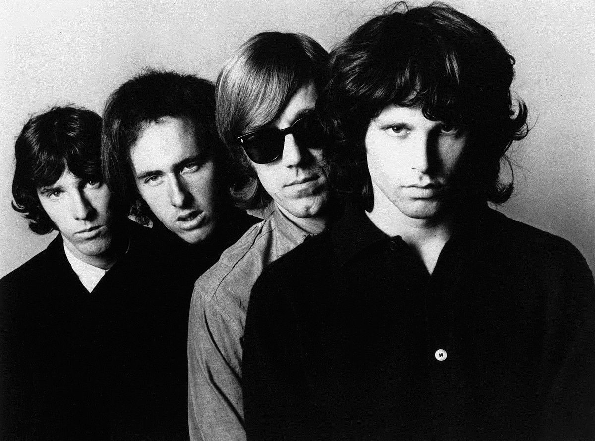

The Doors foi uma banda de rock norte-americana, fundada em 1965, em Los Angeles, Califórnia. O grupo era composto por Jim Morrison (voz), Ray Manzarek (teclados), Robby Krieger (guitarra) e John Densmore (bateria). Canções como "Break on Through (To the Other Side)", "Light My Fire", "People Are Strange" ou "Riders on the Storm", aliadas à personalidade e escândalos grandiosos protagonizados por Jim Morrison, contribuíram de sobremaneira para o aumento da fama do grupo.